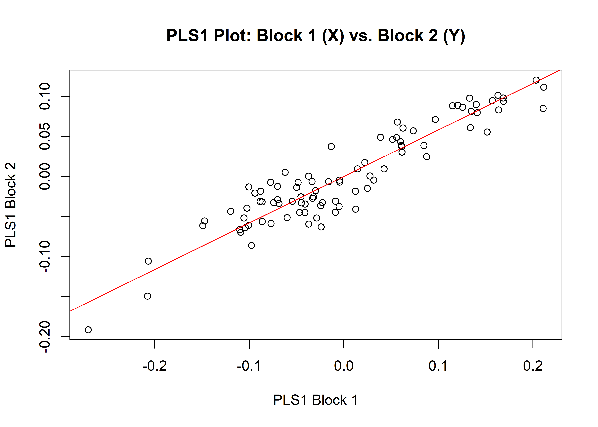

Chapter 3 Procrustes ANOVA - allometry
A residual randomisation permutation procedure (RRPP; n = 10,000 permutations) was used for all Procrustes ANOVAs (Adams and Collyer 2015; Michael L. Collyer and Adams 2018), which has higher statistical power and a greater ability to identify patterns in the data should they be present (Anderson and Ter Braak 2003). To assess whether shape changes differ by group (geography and time), Procrustes ANOVAs (Goodall 1991) were also run that enlist effect-sizes (zscores) computed as standard deviates of the generated sampling distributions (M. L. Collyer, Sekora, and Adams 2015).
# general allometry
fit.size <- procD.lm(shape ~ size,
data = gdf,
print.progress = FALSE,
iter = 9999)
# general allometry?
anova(fit.size)##
## Analysis of Variance, using Residual Randomization
## Permutation procedure: Randomization of null model residuals
## Number of permutations: 10000
## Estimation method: Ordinary Least Squares
## Sums of Squares and Cross-products: Type I
## Effect sizes (Z) based on F distributions
##
## Df SS MS Rsq F Z Pr(>F)
## size 1 0.14079 0.140794 0.07389 5.4253 2.6833 0.0016 **
## Residuals 68 1.76470 0.025952 0.92611
## Total 69 1.90550
## ---
## Signif. codes: 0 '***' 0.001 '**' 0.01 '*' 0.05 '.' 0.1 ' ' 1
##
## Call: procD.lm(f1 = shape ~ size, iter = 9999, data = gdf, print.progress = FALSE)3.1 Procrustes ANOVA - shape and size
A residual randomisation permutation procedure (RRPP; n = 10,000 permutations) was used for all Procrustes ANOVAs (Adams and Collyer 2015; Michael L. Collyer and Adams 2018), which has higher statistical power and a greater ability to identify patterns in the data should they be present (Anderson and Ter Braak 2003). To assess whether shape changes differ by group (geography and time), Procrustes ANOVAs (Goodall 1991) were also run that enlist effect-sizes (zscores) computed as standard deviates of the generated sampling distributions (M. L. Collyer, Sekora, and Adams 2015).
# size
fit.sz.reg <- procD.lm(size ~ region,
data = gdf,
print.progress = FALSE,
iter = 9999)
# size
anova(fit.sz.reg)##
## Analysis of Variance, using Residual Randomization
## Permutation procedure: Randomization of null model residuals
## Number of permutations: 10000
## Estimation method: Ordinary Least Squares
## Sums of Squares and Cross-products: Type I
## Effect sizes (Z) based on F distributions
##
## Df SS MS Rsq F Z Pr(>F)
## region 4 6846.9 1711.74 0.25007 5.4187 2.7356 0.0061 **
## Residuals 65 20533.0 315.89 0.74993
## Total 69 27379.9
## ---
## Signif. codes: 0 '***' 0.001 '**' 0.01 '*' 0.05 '.' 0.1 ' ' 1
##
## Call: procD.lm(f1 = size ~ region, iter = 9999, data = gdf, print.progress = FALSE)# pairwise comparison of LS means = which differ?
sz.reg <- pairwise(fit.sz.reg,
groups = qdata$region)
summary(sz.reg,
confidence = 0.95,
test.type = "dist")##
## Pairwise comparisons
##
## Groups: blackland prairies edwards plateau gulf coast prairies and marshes oak woods and parairies piney woods
##
## RRPP: 10000 permutations
##
## LS means:
## Vectors hidden (use show.vectors = TRUE to view)
##
## Pairwise distances between means, plus statistics
## d UCL (95%) Z Pr > d
## blackland prairies:edwards plateau 0.3537424 28.08725 -2.1047072 0.9813
## blackland prairies:gulf coast prairies and marshes 11.5316983 27.92845 0.2578440 0.4249
## blackland prairies:oak woods and parairies 3.7736415 32.99148 -0.9409509 0.8163
## blackland prairies:piney woods 12.7467382 27.34488 0.4007684 0.3706
## edwards plateau:gulf coast prairies and marshes 11.8854408 12.86254 1.4492884 0.0712
## edwards plateau:oak woods and parairies 4.1273839 20.20468 -0.4757572 0.6818
## edwards plateau:piney woods 12.3929958 12.09794 1.6354563 0.0450
## gulf coast prairies and marshes:oak woods and parairies 7.7580569 20.00459 0.2191150 0.4319
## gulf coast prairies and marshes:piney woods 24.2784366 11.67024 3.1440569 0.0001
## oak woods and parairies:piney woods 16.5203797 19.37602 1.3324007 0.0876# shape
fit.sh.reg <- procD.lm(shape ~ region,
data = gdf,
print.progress = FALSE,
iter = 9999)
# shape
anova(fit.sh.reg)##
## Analysis of Variance, using Residual Randomization
## Permutation procedure: Randomization of null model residuals
## Number of permutations: 10000
## Estimation method: Ordinary Least Squares
## Sums of Squares and Cross-products: Type I
## Effect sizes (Z) based on F distributions
##
## Df SS MS Rsq F Z Pr(>F)
## region 4 0.15222 0.038055 0.07988 1.4108 1.0485 0.1496
## Residuals 65 1.75328 0.026973 0.92012
## Total 69 1.90550
##
## Call: procD.lm(f1 = shape ~ region, iter = 9999, data = gdf, print.progress = FALSE)3.2 Morphological integration
land.gps <- c("A","A","B","A","A","A","A","A","A","A","A","A","B","B","B","B",
"B","B","B","B","B","B","B","B","B","B","B","B","A","A","A","A",
"A","A","A","A")
it <- integration.test(Y.gpa$coords,
partition.gp = land.gps,
iter = 9999,
print.progress = FALSE)
summary(it)##
## Call:
## integration.test(A = Y.gpa$coords, partition.gp = land.gps, iter = 9999, print.progress = FALSE)
##
##
##
## r-PLS: 0.9185
##
## Effect Size (Z): 6.59842
##
## P-value: 1e-04
##
## Based on 10000 random permutationsplot(it)
3.3 Morphological disparity
morphol.disparity(shape ~ region,
groups = qdata$region,
data = gdf,
print.progress = FALSE,
iter = 9999)##
## Call:
## morphol.disparity(f1 = shape ~ region, groups = qdata$region, iter = 9999, data = gdf, print.progress = FALSE)
##
##
##
## Randomized Residual Permutation Procedure Used
## 10000 Permutations
##
## Procrustes variances for defined groups
## blackland prairies edwards plateau gulf coast prairies and marshes
## 0.01010879 0.03237101 0.01844574
## oak woods and parairies piney woods
## 0.02338077 0.02680510
##
##
## Pairwise absolute differences between variances
## blackland prairies edwards plateau gulf coast prairies and marshes oak woods and parairies
## blackland prairies 0.000000000 0.022262217 0.008336949 0.013271984
## edwards plateau 0.022262217 0.000000000 0.013925268 0.008990233
## gulf coast prairies and marshes 0.008336949 0.013925268 0.000000000 0.004935035
## oak woods and parairies 0.013271984 0.008990233 0.004935035 0.000000000
## piney woods 0.016696312 0.005565905 0.008359363 0.003424328
## piney woods
## blackland prairies 0.016696312
## edwards plateau 0.005565905
## gulf coast prairies and marshes 0.008359363
## oak woods and parairies 0.003424328
## piney woods 0.000000000
##
##
## P-Values
## blackland prairies edwards plateau gulf coast prairies and marshes oak woods and parairies
## blackland prairies 1.0000 0.0938 0.5718 0.3866
## edwards plateau 0.0938 1.0000 0.0232 0.3497
## gulf coast prairies and marshes 0.5718 0.0232 1.0000 0.6050
## oak woods and parairies 0.3866 0.3497 0.6050 1.0000
## piney woods 0.1859 0.3529 0.1392 0.7153
## piney woods
## blackland prairies 0.1859
## edwards plateau 0.3529
## gulf coast prairies and marshes 0.1392
## oak woods and parairies 0.7153
## piney woods 1.00003.4 Mean shapes
# subset landmark coordinates to produce mean shapes
new.coords <- coords.subset(A = Y.gpa$coords,
group = qdata$region)
names(new.coords)## [1] "blackland prairies" "edwards plateau" "gulf coast prairies and marshes"
## [4] "oak woods and parairies" "piney woods"# group shape means
mean <- lapply(new.coords, mshape)
# plot mean shapes
plot(mean$`blackland prairies`) 
plot(mean$`edwards plateau`)
plot(mean$`gulf coast prairies and marshes`)
plot(mean$`oak woods and parairies`)
plot(mean$`piney woods`)
# comparison plots
plotRefToTarget(mean$`blackland prairies`,
mean$`edwards plateau`,
method = "points",
mag = 1)
plotRefToTarget(mean$`blackland prairies`,
mean$`gulf coast prairies and marshes`,
method = "points",
mag = 1)
plotRefToTarget(mean$`blackland prairies`,
mean$`oak woods and parairies`,
method = "points",
mag = 1)
plotRefToTarget(mean$`blackland prairies`,
mean$`piney woods`,
method = "points",
mag = 1)
plotRefToTarget(mean$`edwards plateau`,
mean$`gulf coast prairies and marshes`,
method = "points",
mag = 1)
plotRefToTarget(mean$`edwards plateau`,
mean$`oak woods and parairies`,
method = "points",
mag = 1)
plotRefToTarget(mean$`edwards plateau`,
mean$`piney woods`,
method = "points",
mag = 1)
plotRefToTarget(mean$`gulf coast prairies and marshes`,
mean$`oak woods and parairies`,
method = "points",
mag = 1)
plotRefToTarget(mean$`gulf coast prairies and marshes`,
mean$`piney woods`,
method = "points",
mag = 1)
plotRefToTarget(mean$`oak woods and parairies`,
mean$`piney woods`,
method = "points",
mag = 1)